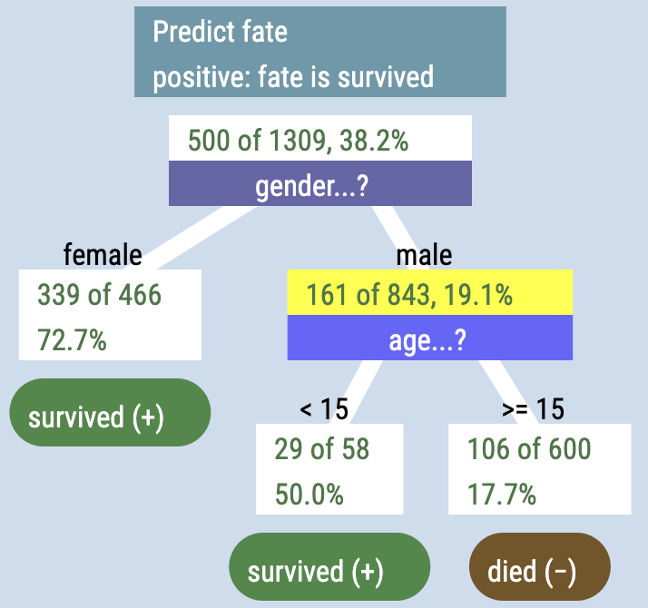
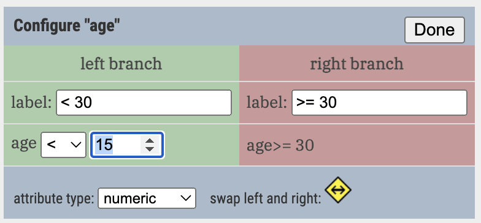

3 Your first tree
Let’s learn to drive! We will begin by exploring a dataset about the passengers aboard the Titanic. This is the goal:

3.1 The target attribute
To make a tree, you first have to identify your target attribute. The target attribute might also be called
- the dependent variable
- the outcome variable
- the effect
It’s the thing you are trying to predict. In the case of the Titanic data, it’s fate: we want to know what makes it more likely to have survived the disaster.
In the live example below, start your tree by dragging fate from the table at the right and dropping it into the middle of the blank, gray tree panel. You should see that 500 of the 1309 people survived.
3.2 Making a branch: drag and drop
Next, drop gender onto the white box with “500 of 1309” in it.
The tree will branch. You can see how the survival rate was different for males and females.
Notice that the tree is composed of boxes (called nodes) and lines (links).
It’s easy to lose track of what’s going on in a node. When that happens, just point at the node. Don’t click, just hover for a moment, and text will pop up describing that node in more detail.

3.2.1 Adding a numeric attribute
Now drop age onto the “male” node. It will split, but probably using age 30 as a cutpoint. Click the gear on the age stripe and change that 30 to 15.

age: setting the cutpoint to 15.When you make a tree with Arbor, every node has a maximum of two branches. An attribute like age has so many values, you generally have to tell Arbor where that cutpoint is using that configuration box.
You can configure any attribute, but it’s more common for numerical ones. Click to learn more about the configuration box.
3.2.2 Assigning results to terminal nodes
survived or died.Now your tree should look like the one at right… except that you still have to assign the terminal nodes — the leaves of the tree — to an outcome. Do that by clicking on the leaf nodes repeatedly until you see what you want.